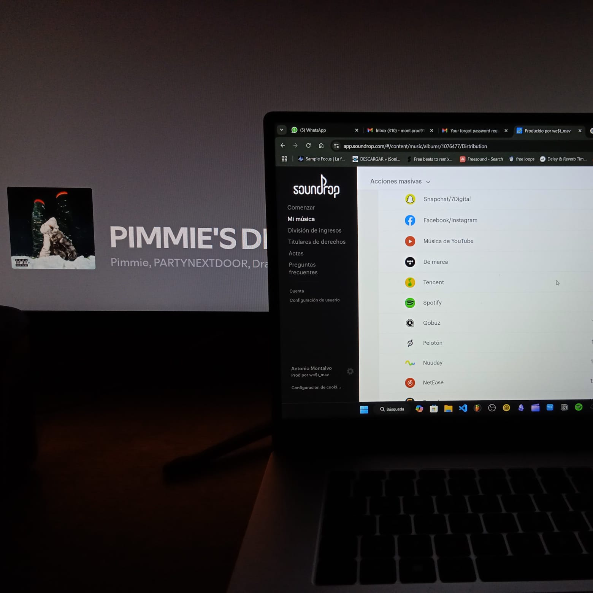
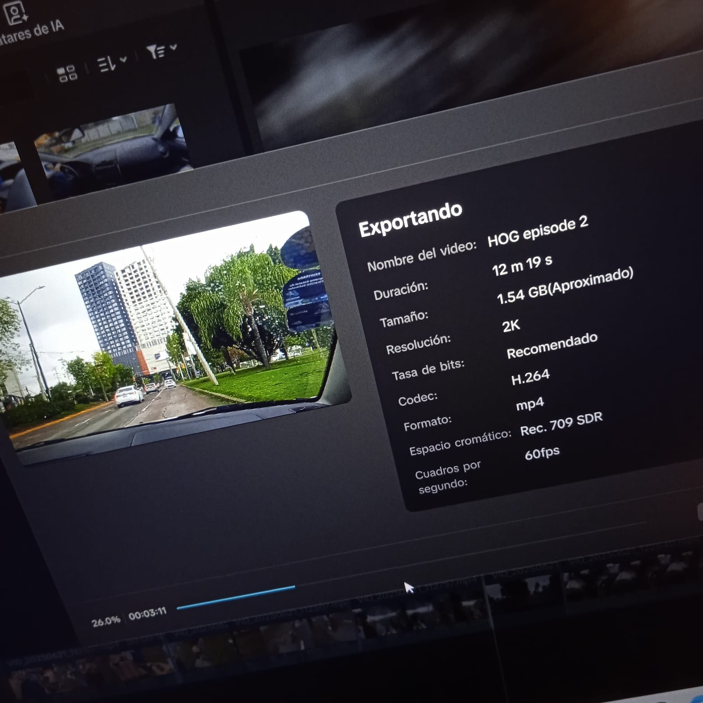
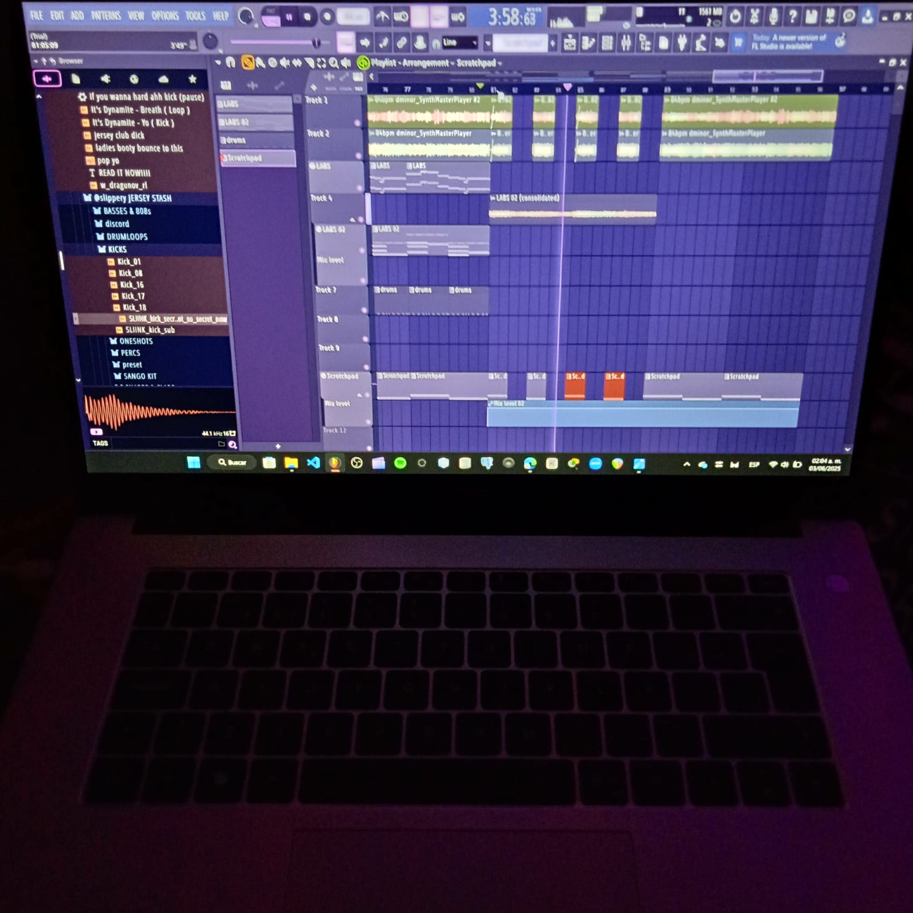
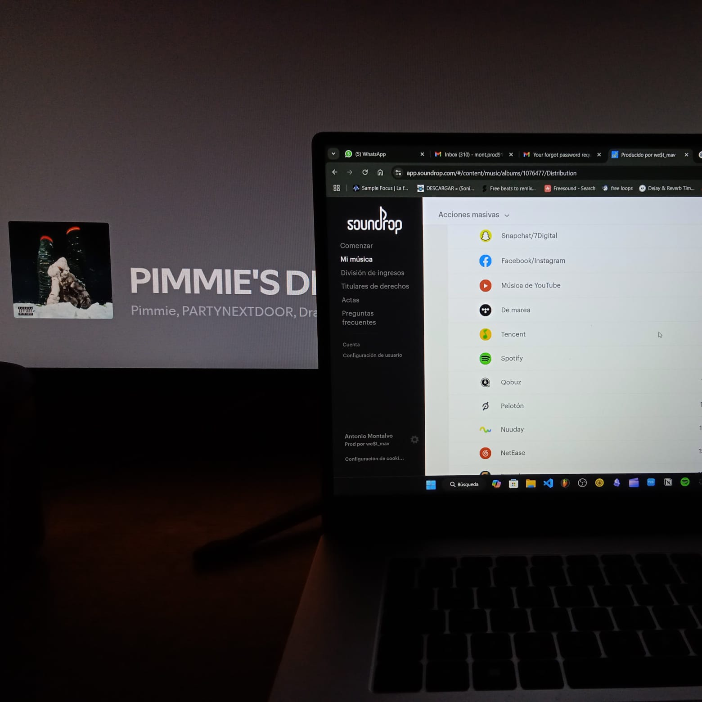
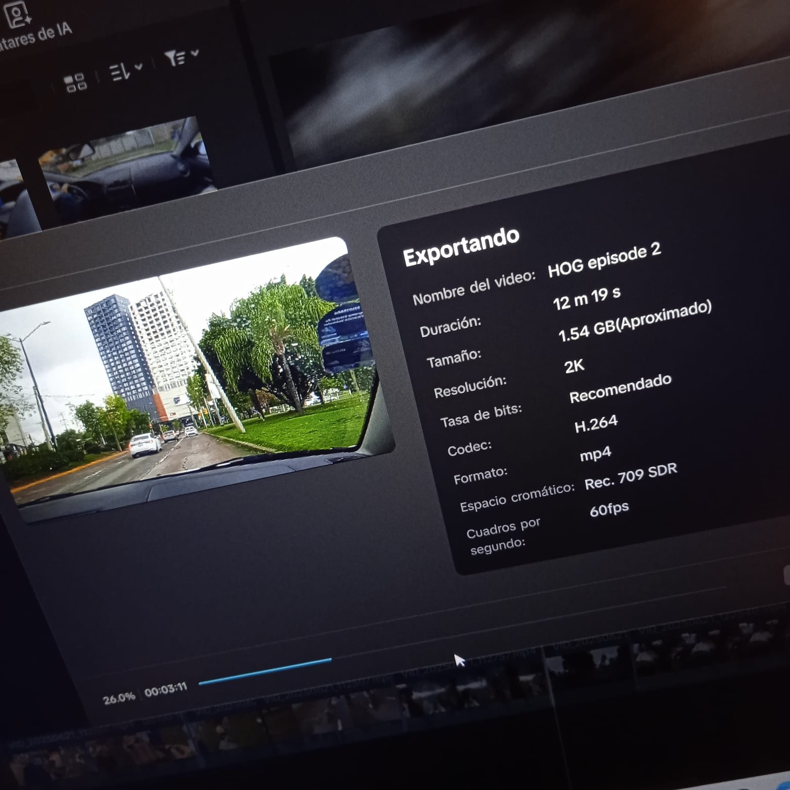
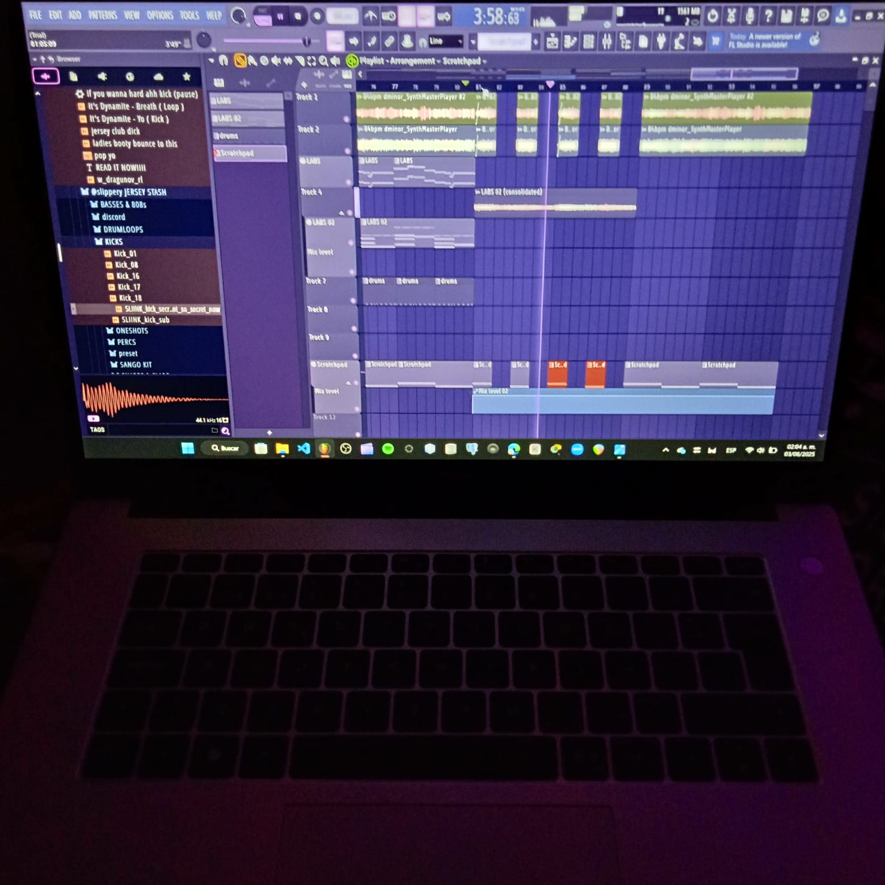

Sobre mí
Mini biografía
Mi nombre es Juan Antonio Montalvo Ramírez. Nací el 13 de julio de 2005 en León, Guanajuato. Desde muy joven, mi curiosidad me llevó a buscar el porqué de las cosas, una inclinación que me dirigió de forma natural hacia el potencial de la tecnología y la lógica de los sistemas.
Mi meta primordial ahora es mi formación en Ingeniería en Computación en la Universidad de León, donde busco dominar la técnica y las bases del desarrollo. Aunque el ambiente artístico de la música y la pintura me ha influenciado profundamente, convirtiendo la producción musical en un laboratorio valioso para la creatividad.
Mi visión es lograr un equilibrio funcional entre la lógica de la programación y la expresión artística. No busco solo codificar; mi misión es que cada proyecto que desarrolle lleve una esencia propia, fusionando la técnica con una creatividad que me permita salir de lo ordinario y generar soluciones innovadoras a través de rutas alternativas.
Intereses y valores
- Trabajo en equipo
- Aprendizaje constante
- Responsabilidad
- Creatividad
Tecnologías y áreas que domino
 




